Nick Mikulin
I combine design thinking with technical awareness and product management experience to design, prototype, and ship user interfaces.
I co-founded and designed

I simplify product experiences as Staff Product Designer at Manychat and teach product design ↗ at Harbour.Space University in Barcelona.